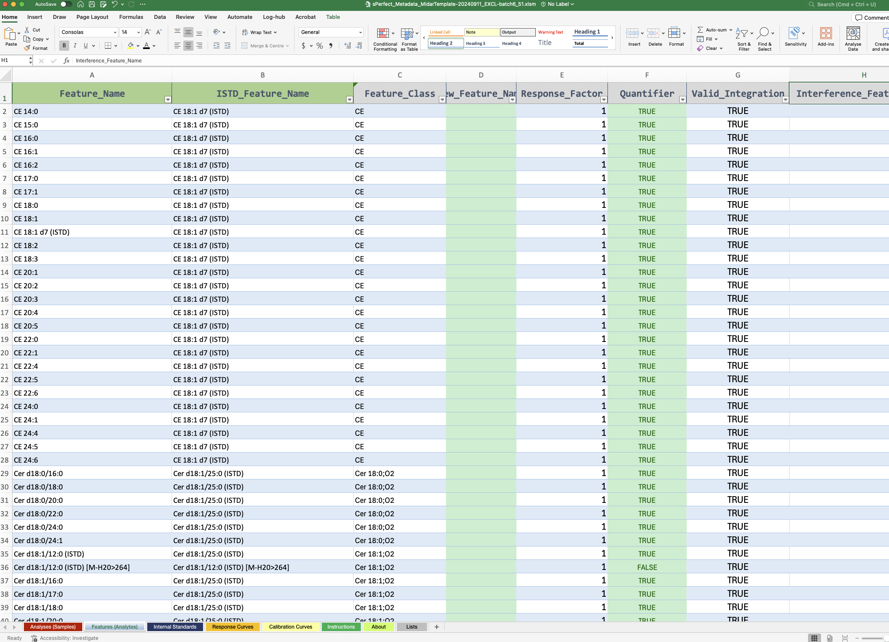

SLING Data Analysis Workshop
Part 2: Post-processing of integrated peak data
#| echo: false # Show code in document
#| output: true # Show output in document (`true`, `false`m or `asis`)
#| include: true # `false` suppressed any output (code, results, messages)
#| message: false # Show or hide messages generated by code
#| warning: false # Show or hide warnings generated by code
#| eval: true
# Load R packages
library(midar)
library(here)
library(patchwork)
library(tictoc)
Import of the MRMkit result with integrated peak areas
We import the peak areas obtained from peak integration using MRMkit in Part 1 of this workshop. This MRMkit result file contains the peak areas for each feature (analyte signal) in each processed analysis file. In addition, the MRMkit result contains retention time and width of integrated peaks, as well as some analysis metadata that were extracted from the mzML files, i.e. the acquistion time, transition parameters and metadata provided to the MRMkit. We will import these available metadata as well (use_metadata = TRUE)
data_path <- "./data/sPerfect_MRMkit-20240911.tsv"
metadata_path <- here("Part2_Postprocessing/data/sPerfect_Metadata_MidarTemplate-20241001_All.xlsm")
myexp <- midar::MidarExperiment()
myexp <- midar::data_import_mrmkit(myexp, path = data_path, use_metadata = TRUE)
myexp <- midar::metadata_import_midarxlm(myexp, path = metadata_path, ignore_warnings = TRUE) We see from the command line messages that the data and metadata were successfully imported.
Taking a glimpse on the imported MRMkit results
We can print the imported data (or assign it to variable). As we can see, the data is in the long format, allowing use to view multiple parameters for each analysis-feature pair. Using View(myexp@dataset_orig) we can explore the data in the RStudio table viewer.
#| output: true
data_raw <- myexp@dataset_orig ##TODO
print(data_raw)A first look at the run
midar::qc_plot_runscatter(
data = myexp,
variable = "intensity",
filter_features = "ISTD",
filtered_data = FALSE,
qc_types = c("BQC", "TQC", "SPL"),
cap_outliers = TRUE,
cap_spl_k_mad = 4, cap_qc_k_mad = 14,
log_scale = FALSE,
show_batches = TRUE,
save_pdf = TRUE,
path = here("Part2_Postprocessing/output/runscatter_istd.pdf"),
cols_page = 2, rows_page = 3,
show_progress = FALSE
)Explore the overall analysis structure and performance
To review the analysis sequence we first plot the run sequence and then have a first overview of the analysis results.
midar::data_plot_runsequence(myexp, qc_type_subet = "SPL|BQC|TQC|LRT|PBLK|SBLK|RQC",
segment_width = 0.5, base_size = 8)
p <- midar::qc_plot_runboxplot(data = myexp, use_qc_filtered_data = FALSE,
relative_log_abundances = TRUE,
batch_line_color = "darkblue",
plot_var = "feature_intensity",
min_feature_intensity = -Inf) + scale_y_continuous(limits = c(-5,2))
ggsave("runbox.pdf", plot = p, width = 20, height = 7)
pLooking at the Internal Standard signals
This gives us a better idea of the overall trends in the analysis
midar::qc_plot_runscatter(
data = myexp,feature_incl_filt = "ISTD",
plot_var = "feature_intensity",
cap_outliers = TRUE,
show_batches = TRUE,
batches_as_shades = FALSE,
base_size = 3, annot_scale = 1,point_size = 1,
cols_page = 3, rows_page = 3
)
Associate data with detailed metadata
For a more detailed processing and analysis we need to prove more metadata describing the samples and features. One option is using an defined EXCEL template to collect, organize and pre-validated the metadata:

Below we will now import such metadata (have a look at the file in EXCEL). A summary on identified and potential issues of the metadata will be shown.
myexp <- midar::metadata_import_midarxlm(myexp, path = metadata_path, ignore_warnings = TRUE)
#midar::set_intensity_var(data = myexp, variable_name = "feature_intensity")Correct for isotope interference
SHOW MRMkit example of co-integration with M+2 isomer
myexp <- midar::correct_interferences(myexp)qc_plot_pca(
data = myexp,
variable = "feature_intensity",
use_filtered_data = FALSE,
pca_dim = c(1,2),
label_k_mad = 3,
qc_types = c("SPL", "BQC", "NIST", "TQC"),
log_transform = TRUE,
point_size = 2, point_alpha = 0.7, font_base_size = 8, ellipse_alpha = 0.3,
remove_istds = TRUE,
min_median_signal = NA)
myexp <- data_exclude_analyses(myexp, analyses_exlude = c("Longit_batch6_51"), overwrite = TRUE)
#mexp <- data_exclude_analyses(mexp, analyses_exlude = NA, overwrite = TRUE)
qc_plot_pca(
data = myexp,
variable = "feature_intensity",
use_filtered_data = FALSE,
pca_dim = c(1,2),
label_k_mad = 3,
qc_types = c("SPL", "BQC", "NIST", "TQC"),
log_transform = TRUE,
point_size = 2, point_alpha = 0.7, font_base_size = 8, ellipse_alpha = 0.3,
remove_istds = TRUE,
min_median_signal = NA,
hide_label_text = NA)Normalize and quantitate
myexp <- midar::calc_normalize_by_istd(myexp, error_missing_info = FALSE)
myexp <- midar::calc_quant_by_istd(myexp, error_missing_info = FALSE)Drift and Batch correction
myexp <- midar::correct_drift_gaussiankernel(
data = myexp,
qc_types = c("SPL"),
batch_wise = TRUE,
kernel_size = 10,
outlier_filter = TRUE,
outlier_ksd = 5,
location_smooth = TRUE,
scale_smooth = FALSE
)
myexp <- midar::correct_batcheffects(
myexp,
qc_types = "SPL",
correct_location = TRUE,
correct_scale = FALSE)QC filter
myexp <- qc_set_feature_filters(
data = myexp,
ammend = TRUE,
batchwise_median = TRUE,
istd.include = FALSE,
intensity.median.spl.min = 500,
signalblank.median.pblk.min = 0)
myexp <- qc_set_feature_filters(
data = myexp,
ammend = TRUE,
qualifier.include = FALSE,
batchwise_median = TRUE,
istd.include = FALSE,
response.curve.id = 1,
response.rsquare.min = 0.8,
response.yintersect.rel.max = 0.6,
intensity.median.spl.min = 500,
signalblank.median.pblk.min =10)
myexp <- qc_set_feature_filters(
data = myexp,
ammend = FALSE,
batchwise_median = TRUE,
qualifier.include = FALSE,
istd.include = FALSE,
response.curve.id = 1,
response.rsquare.min = 0.8,
response.yintersect.rel.max = 0.6,
signalblank.median.pblk.min = 10,
intensity.median.spl.min = 500,
#dratio.conc.tqc.mad.max = 0.5,
cv.conc.bqc.max = 25
#features_to_keep = c("CE 20:4", "CE 22:5", "CE 22:6", "CE 16:0", "CE 18:0")
)
PCA plots
qc_plot_pca(
data = myexp,
variable = "feature_conc",
use_filtered_data = TRUE,
pca_dim = c(1,2),
label_k_mad = 3,
qc_types = c("SPL", "BQC", "NIST", "TQC"),
log_transform = TRUE,
point_size = 2, point_alpha = 0.7, font_base_size = 8, ellipse_alpha = 0.3,
remove_istds = TRUE,
min_median_signal = NA,
hide_label_text = NA)
midar::qc_plot_runscatter(
data = myexp,
plot_var = "feature_conc",
use_filt_data = TRUE,
qc_types = c("BQC", "TQC", "SPL"),
feature_excl_filt = "ISTD",
cap_outliers = FALSE,
cap_qc_iqr_factor = 2.5,
cap_spl_iqr_factor = 1.5,
qc_type_fit = "BQC",
log_scale = FALSE,
show_driftcorrection = FALSE,
after_correction = FALSE,
show_batches = TRUE,
batches_as_shades = FALSE,
batch_line_color = "#b6d2e0",
save_pdf = TRUE,
path = here("Part2_Postprocessing/output/sperfect-mrmkit_runscatter_ADJUSTED-CONC-noScaleSmooth-withBatchScaleAdj_1.pdf"),
show_gridlines = FALSE,
cols_page = 2, rows_page = 3
)